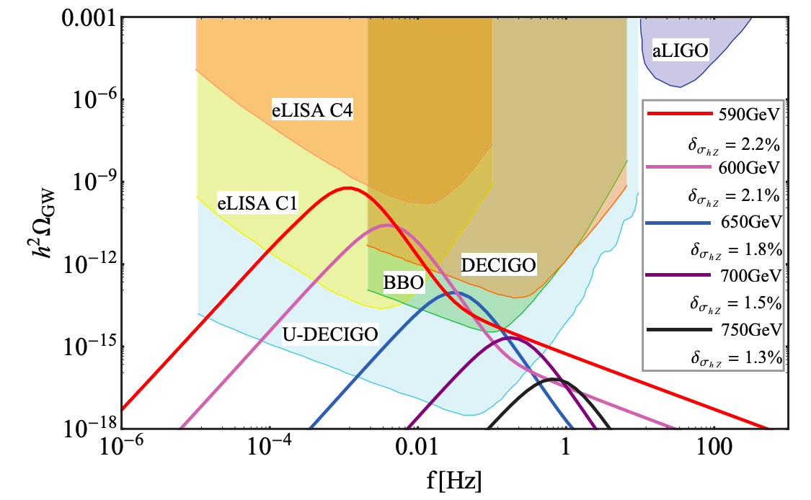

Research Achievements
Most of my publications are listed in Inspireshep
Enter Title Here
A new approach to explore axion dark matter using the resonant conversion process in the magetosphere of pulsar or other magtitized region by SKA and FAST

Hearing the echoes of electroweak baryogenesis with gravitational wave detectors [1]
Publications
-
Hearing the echoes of electroweak baryogenesis with gravitational wave detectors
Fa Peng Huang(Beijing, Inst. High Energy Phys.), Youping Wan(Beijing, Inst. High Energy Phys.), Dong-Gang Wang(Hefei, CUST), Yi-Fu Cai(Hefei, CUST), Xinmin Zhang(Beijing, Inst. High Energy Phys.) (Jan 7, 2016)
Published in: Phys.Rev.D 94 (2016) 4, 041702 ∙ e-Print: 1601.01640 [hep-ph]z
73 citations